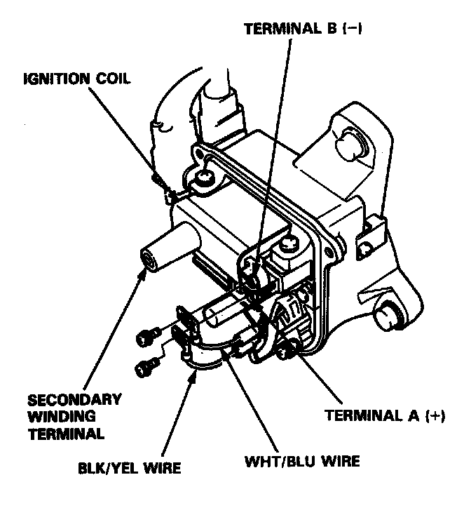
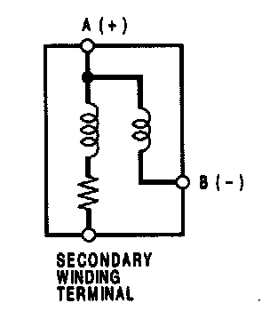

Ignition Coil: Testing and Inspection
IGNITION COIL TEST1. With the ignition switch OFF, remove the distributor cap.

2. Remove the two screws to disconnect the BLK/YEL and WHT/BLU wires from the terminals A (+) and B (-) respectively.

3. Using an ohmmeter, measure resistance between the terminals. Replace the coil if the resistance is not within specifications.
NOTE: Resistance will vary with the coil temperature; specifications are at 20°C (68°F).
Primary Winding Resistance
(between the A and B terminals):
0.6-0.8 ohms
Secondary Winding Resistance
(between the A and secondary winding terminals):
12,800 - 19,200 ohms